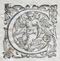

|
E' stato Marco Mancianti ad individuare in un faldone di cause seicentesche, un bando che si rivolgeva alle nobili e onoratissime contrade, chiedendone la
partecipazione in occasione delle feste che si sarebbero svolte per l'imminente visita del Granduca a Siena.
Nel bando, che si trova allegato alla filza di una causa mossa dalla Giraffa, che chiedeva il rimborso delle spese sostenute dalla contrada in occasione della bufalata del 1612, vi si legge pure il regolamento della giostra ed un vago riferimento
ad un "grave ed inaspettato accidente" avvenuto l'anno precedente.

ALLE NOBILI
ED ONORATISSIME CONTRADE
DI SIENA
 a Città nostra di Siena, sicurissima di dover'esser favorita, e
ricreata altamente dal ritorno aspettatissimo, e dalla solita, e
magnanima generosità de' SERENISSIMI suoi Padroni; ha pensato, e
risoluto, VALOROSISSIME CONTRADE, trà l'altre dimostrazioni del
suo grandissimo affetto, e devotione verso di loro, come per
convenevol tributo di gratitudine, far correre con le Bufale
nella sua Piazza principale, l'istesso Palio, che altra volta,
per grave ed inaspettato accidente, le convenne lassare; e perchè
sà benissimo con quanta lode vostra vi mostraste all'hora
animate, e pronte à concorrere, e promuover questa sua
giustissima, e dovuta deliberazione, sperando trovarvi non
diverse da voi stesse quest'Anno ancora, Invita e prega voi tutte
à voler comparire nel medesimo, e maggior numero à far più
grande, e più gioconda la festa; rendendovi certe intanto, che
si, come la benignità Serenissima non ha voluto mancare à se
stessa, ne gli interessi, ed utile dello Stato con la visita di
quello, così sia per gradir gentilmente il diletto, che le
darete, e'l vostro ossequio. Preparatevi dunque per il giorno,
che doppo la venuta loro sarà pubblicato, à voler con gloria
vostra, se non pagare, confessare almeno quanto si deve da
ciascuno à i segnalati benefizi, che se ne riceve tuttavia, à
fine che questo segno di prontezza possa fare offitio per tutti,
quasi di memoriale, in cui per benigno rescritto, trà le molte
altre gratie ne sia condonato, e rimesso quel più, à che per
degnamente riceverli, ed onorarli, non è conceduto arrivare.
 ORDINI, ET CAPITOLI
ORDINI, ET CAPITOLI
DA OSSERVARSI
 IASCUNA delle Contrade, che si compiacerà di correre, prima
che entri nella Piazza, devi mandar due de' suoi, alli Signori
Deputati sopra il Palio, che li condurranno dinanzi alli Signori
Giudici per la licenza di esser ammessi.
2 - L'entrata di ciascheduna Contrada, doverà farsi alle
vint'hore, e non più, e per quella parte, dove assisteranno le
Serenissime Altezze, con quella accompagnatura di Trombe,
Tamburi, ò Musiche, che più gli piacerà, et passeggiato, che
haverà una volta il Campo, si rappresenterà dinanzi alli Signori
Giudici, e dato loro inscritto la sua inventione, si ritirerà al
posto, che li sarà destinato, mettendo l'insegna sopra il suo
steccone.
3 - Se avverrà, che due Contrade o più s'affrontino nello stesso
tempo à domandar l'entrata, per tor via tutte l'occasioni di
contese, si spareggierà per sorte, chi di loro abbia esser la
prima.
4 - Doppo che saranno arrivate tutte le Contrade, e piantate le
loro Insegne, si mandino le Bufale avanti li Signori Giudici,
secondo l'ordine, con che saranno arrivate. Le medesime devino
guidarsi da uno, che sopra vi stia, vestito nel modo, che più li
piacerà, et à piedi siano seguite da sei per ciascuna, con abito
non dissimile dal sopradetto, et Asti in mano di misura di due
braccia, e suo pungolo in cima. Quivi per li Signori Deputati
contrassegnino le Bufale, e da' Signori Giudici siano
riconosciute le misure delle dette Asti.
5 - Contrassegante che saranno le Bufale, si cavino per sorte i
luoghi di tutte, et immediatamente si ponghino alla mossa, la
quale sarà dinanzi al palco di loro Altezze, per muoversi à
drittura della Selice piana, et girato che haveranno tre volte il
Campo, la prima Bufala, che arriverà dove sarà affissato il
Palio, s'intenda haverlo conseguito, aspettandone nondimeno la
dichiaratione da' Signori Giudici.
6 - Non possa nell'atto del correre intromettersi a favore, ò
disfavore d'alcuna Bufala, altri che solo li sei accompagnatori
predetti, et quelli, che contrafacessero, oltre a' pregiuditij,
che per pubblico Bando saranno dichiarati, siano tenuti
all'intero rifacimento del danno.
7 - Oltr'al Palio vi saranno tre premij. Il primo si conseguirà
da quella Contrada, che dì più vistosa, et leggiadra mostra haverà
fatta la sua livrea, e che con minore spesa, haverà saputo
apparir meglio, e dar maggior diletto. Il secondo si darà a
quella, che con più spiritosa inventione, et più accommodata alla
presente allegrezza, stimeranno li Sig.Giudici, che sia comparsa.
Il terzo sarà di quella, che la prima harà deliberato di
concorrere a questa festa, come già si è promesso, non per
disporre le Contrade, sapendosi, che son tutte prontissime à dare
ogni maggior segno d'allegrezza per la venuta de' Serenissimi
Padroni, ma per sollecitarle maggiormente in questa brevità di
tempo.
8 - Di tutte le cose, che accader' potessero, non espresse ne'
sopradetti Capitoli, si dichiara per ultimo, che la terminatione,
e giuditio, si aspetti assolutamente al molto sapere, et alla
prudentissima giustitia de' Signori Giudici, a' quali vogliamo,
che s'intenda conceduta la suprema autorità di questa festa, et
del Palio.
IN SIENA, Appresso Matteo Florimi, 1612. Con licenza de'Superiori,
Archivio di Stato di Siena - Capitano di Giustizia 881 - proc. 47
|